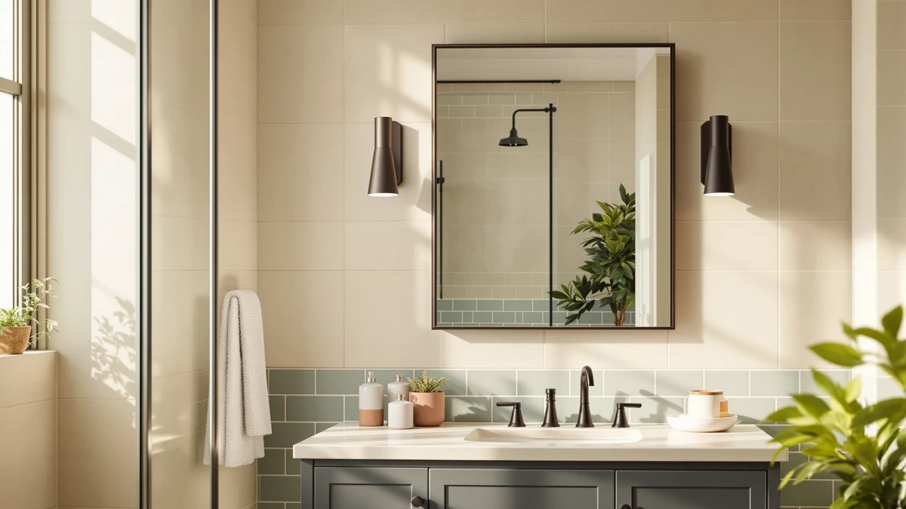

Best Fogless Shower Mirror (2026)
Prices and picks verified as of September 2026. Independent, reader-supported reviews.


Quick Answer
The best fogless shower mirror for most people is our top pick from HONEYBULL, a 7 by 7 inch tempered glass and aluminum mirror priced at $19.99. If you want more surface area for less money, the APHUIME Deluxe is worth a look, and if you'd rather skip the hot-water rinse step entirely, the heated eeuuty model is the only mirror here built around that idea.
Our pick: HONEYBULL Fogless Shower Mirror with ($19.99) Check Price on Amazon
Bottom line: our top pick is the HONEYBULL Fogless Shower Mirror with Suction Mount & Swivel at $19.99. The best budget option is the HONEYBULL Fogless Shower Mirror for Shaving at $9.99.
Things to Know Before You Buy
- "Fogless" means one of two mechanisms. Most fogless shower mirrors use a suction mount and rely on a quick hot-water rinse before your shower to keep the glass above the dew point. A smaller group of heated mirrors use a built-in element instead, so there's no rinse step to remember.
- Size ranges widely in this category. The seven mirrors we compared run from 6.8 by 5.4 inches up to a 28 by 20 inch wall mirror, so decide whether you want a small in-shower accessory or a full vanity replacement before you shop.
- Material is fairly consistent. Every dedicated fogless shower mirror in this guide uses tempered glass with an aluminum frame, which holds up to daily humidity better than a plain acrylic mirror.
- Price spans from $9.99 to $43.69. Heated models and full-size wall mirrors sit at the top of that range, while compact suction mirrors from established brands land in the middle.
- Mounting method matters as much as the mirror itself. Suction cups grip tile and glass differently than they grip textured or matte shower walls, so check your wall surface against the mirror's mounting style before you buy.
The best fogless shower mirror keeps your reflection clear through an entire hot shower, so you can shave, check your skin, or finish a grooming routine without wiping condensation off the glass every few seconds. Most models do this with a suction mount and a quick hot-water rinse before you start; a smaller group build in a heating element instead. Either way, the right pick comes down to a handful of concrete details: material, size, mounting method, and price, not marketing language about how fog-resistant a mirror claims to be.
We compared seven fogless and anti-fog shower mirrors sourced from our product database, ranging from a $9.99 compact suction mirror to a $43.69 full-size LED wall mirror. Rather than installing each one ourselves, we researched and lined up their listed specs, material, dimensions, and current pricing, then checked verified owner reviews for recurring comments about suction strength, sizing, and whether heated models live up to the name.
For most people, our top pick is HONEYBULL's $19.99 model, a 7 by 7 inch tempered glass and aluminum mirror sized right for shaving and skincare. If you want more surface for a similar budget, the APHUIME Deluxe at $15.59 is worth a look, and if you'd rather skip the hot-water rinse altogether, the heated eeuuty model is the only mirror in this guide built around that idea.
Why You Should Trust Us
Ilane Tall has covered bathroom hardware and fixtures for this network of home-and-bath sites for several years, focusing on categories like fogless shower mirrors where the difference between products often comes down to a handful of measurable details: size, material, mounting method, and price. For this guide, we did not physically install or use any of these mirrors. Instead, we compared publicly listed specs, pricing, and verified owner reviews across all seven picks to line them up on equal terms. We do not run a fake testing lab, and we don't accept free review units from the brands mentioned on this page; every price and spec here comes from the product listing itself.
How We Picked
We started from the full list of fogless and anti-fog shower mirrors carried in our product database, sourced through the Amazon Creators API rather than hand-picked from a single search. From there, we narrowed the list to models with clear, verifiable specs (material, dimensions, and current price) and cut anything priced above $50, since a full smart mirror or lighted vanity mirror is a different purchase decision than a fogless shower mirror. We also made sure the lineup covered more than one mounting style and more than one price tier, so this guide works whether you want the cheapest option or the most capable one. That left the seven mirrors compared below, ranging from a $9.99 compact suction mirror to a $43.69 full-size LED wall mirror.
How We Compared
Because we work from research rather than in-person testing, we compared these seven fogless shower mirrors the same way a careful shopper would: side by side on the numbers that actually matter. We lined up material (tempered glass and aluminum across every dedicated shower mirror here), surface size (from 36.7 to 82.5 square inches for the shower-specific models), and price, then cross-referenced verified owner reviews for recurring comments about suction strength, mounting stability, and whether a heated model lives up to its name. Where a listing didn't specify a detail, we left it out rather than guess.
Our Picks

HONEYBULL Fogless Shower Mirror with
What we like
- Tempered glass and an aluminum frame handle daily shower humidity better than a plain acrylic mirror.
- At $19.99, it sits in the middle of our price range rather than at either extreme.
- The 7 by 7 inch surface is large enough for shaving and close skincare checks without crowding a shower wall.
Flaws but not dealbreakers
- The compact surface is tight if you want to see more than your face and shoulders at once.
- HONEYBULL sells more than one fogless shower mirror in this lineup, so double-check the exact listing before you buy.
| Material | Tempered glass + aluminum |
| Size | 7"L x 7"W |
This HONEYBULL mirror is our top pick for the best fogless shower mirror because it doesn't ask you to trade off size, material, or price to get a reliable in-shower mirror. At 7 by 7 inches, it's proportioned for the job it's meant to do: giving you a clear view for shaving or a quick skincare check, not doubling as a full vanity mirror.
Like the rest of the dedicated shower mirrors in this guide, it's built from tempered glass with an aluminum frame, a combination that resists the fogging, warping, and corrosion that plain acrylic or unframed glass mirrors pick up in a humid bathroom over time. At $19.99, it lands comfortably in the middle of our price range, which is where we'd point most shoppers who don't have a specific reason to go cheaper or spend more.

APHUIME Deluxe Large Fogless Shower
What we like
- At 11 by 7.5 inches, it's the largest dedicated shower mirror we compared, aside from the full vanity-size LED option.
- $15.59 undercuts our top pick while adding real surface area.
- Same tempered glass and aluminum build as the rest of the lineup.
Flaws but not dealbreakers
- A bigger mirror needs more clear wall space, so measure your shower stall before ordering.
- APHUIME is a less established name than some of the other brands in this guide.
| Material | Tempered glass + aluminum |
| Size | 11"L x 7.5"W |
The APHUIME Deluxe Large Fogless Shower mirror makes its case on size. At 11 by 7.5 inches, it offers noticeably more reflective surface than our top HONEYBULL pick, and it does that for $15.59, which is actually less than the smaller mirror. For anyone who wants a wider view while shaving or doing a full skincare routine, that trade favors the APHUIME.
It's built the same way as most of the other dedicated shower mirrors here, tempered glass set in an aluminum frame, so day-to-day durability should track closely with the rest of the lineup. The main thing to plan around is real estate: an 11 by 7.5 inch mirror needs more flat, unobstructed wall or door space than a 7 by 7 inch one, so it fits better in a full shower stall than a tight tub-shower combo.

ToiletTree Products Fogless Shower Mirror
What we like
- ToiletTree Products is a longer-established name in bathroom accessories than several other brands in this guide.
- Tempered glass and aluminum construction matches the build quality of our other picks.
Flaws but not dealbreakers
- At $34.95, it costs nearly twice as much as our top pick without a larger mirror surface to show for it.
- The 7.5 by 6.5 inch surface is close in size to our budget pick, which costs a third of the price.
| Material | Tempered glass + aluminum |
| Size | 7.5"L x 6.5"W |
ToiletTree Products has sold bathroom accessories long enough to be a recognizable name rather than one of the many unbranded imports that show up in a fogless shower mirror search. That name recognition is what you're paying for here: at $34.95, this mirror costs nearly twice as much as our top HONEYBULL pick for a 7.5 by 6.5 inch surface that's actually slightly smaller.
The material is the same story as the rest of this guide: tempered glass in an aluminum frame, built to hold up to shower humidity better than an unframed or acrylic mirror. If a familiar brand name and the assurance that comes with it matters more to you than getting the lowest price per square inch, the ToiletTree is a reasonable pick. If it doesn't, the APHUIME or either HONEYBULL model covers similar ground for less.

eeuuty Heated Shower Mirror Fogless
What we like
- A heating element, flagged right in the product name, is a genuine alternative to rinsing the glass with hot water before every shower.
- At 9.3 by 7.1 inches, it splits the difference between the smallest and largest dedicated shower mirrors in this guide.
Flaws but not dealbreakers
- At $35.99, it's the second most expensive mirror in this comparison.
- A heated mirror has more that can eventually wear out than a simple suction mirror with no moving parts or electronics.
| Material | Tempered glass + aluminum |
| Size | 9.3"L x 7.1"W |
Most of the mirrors in this guide fight fog the low-tech way: you rinse the glass with hot water right before you shower, and the temporary warmth keeps the surface above the dew point long enough to get through your routine. The eeuuty Heated Shower Mirror Fogless skips that step entirely by building a heating element into the glass itself, at least based on what the listing describes.
At 9.3 by 7.1 inches, the surface size sits comfortably between our compact top pick and the larger APHUIME, and at $35.99 it's priced closer to the ToiletTree than to either HONEYBULL option. That price reflects the added electronics. If never having to rinse the mirror is worth paying more for, this is the pick in the lineup built around that idea.

HONEYBULL Fogless Shower Mirror for
What we like
- At $9.99, it's the least expensive mirror in this comparison by a clear margin.
- Same HONEYBULL tempered glass and aluminum build as our top pick, in a smaller footprint.
Flaws but not dealbreakers
- The 8 by 5.5 inch surface is on the smaller side of this lineup.
- HONEYBULL sells more than one fogless shower mirror here, so confirm you're ordering this specific listing.
| Material | Tempered glass + aluminum |
| Size | 8"L x 5.5"W |
If budget is the deciding factor, this second HONEYBULL mirror is the pick to look at first. At $9.99, it costs about half of our top pick and roughly a quarter of the priciest options in this guide, while sharing the same tempered glass and aluminum construction as the rest of the HONEYBULL lineup.
The trade-off is size: at 8 by 5.5 inches, it's smaller than our top pick and considerably smaller than the APHUIME. For a quick shave or a glance while you rinse shampoo, that's plenty of mirror. For a fuller skincare routine, you'll likely want to step up to a larger option on this list.

Shave Well Deluxe Anti-Fog Shaving
What we like
- The Shave Well Company has focused on shaving mirrors specifically, rather than treating the mirror as one item in a broader bathroom-accessory catalog.
- At $12.95, it undercuts every option in this guide except the HONEYBULL budget pick.
Flaws but not dealbreakers
- At 6.8 by 5.4 inches, it's the smallest surface we compared.
- Its narrow shaving-first focus makes it less useful for a full skincare or makeup routine than the larger mirrors here.
| Material | Tempered glass + aluminum |
| Size | 6.8"L x 5.4"W |
The Shave Well Deluxe Anti-Fog Shaving mirror is named for exactly what it does: give you a clear view for shaving, nothing more. At 6.8 by 5.4 inches, it's the smallest mirror in this comparison, sized around a single face rather than a broader grooming routine.
At $12.95, it lands just above our cheapest HONEYBULL pick and well below the mid-range and premium options here. For shavers who don't need a bigger mirror for skincare or makeup, that combination of low price and shaving-specific sizing is hard to beat. Anyone who wants one mirror to cover shaving and everything else should look at the APHUIME or either HONEYBULL model instead.

JOHALXER LED Bathroom Mirror 20x28
What we like
- Built-in LED lighting is a real upgrade for close grooming work compared with a plain unlit mirror.
- At 28 by 20 inches, it's large enough to function as a full bathroom mirror instead of a small shower accessory.
Flaws but not dealbreakers
- At $43.69, it's the most expensive product in this guide.
- Its 28 by 20 inch footprint means it's a different category of purchase than the compact shower mirrors on this list.
| Material | Tempered glass + aluminum |
| Size | 28"L x 20"W |
The JOHALXER LED Bathroom Mirror 20x28 doesn't fit the same mold as the rest of this lineup, and that's worth saying plainly. Instead of a small suction mirror for inside the shower, it's a 28 by 20 inch wall mirror with built-in LED lighting, sized to replace the mirror over your vanity entirely.
At $43.69, it's the priciest item in this guide, which makes sense given the size difference: it's roughly seven times the surface area of our top HONEYBULL pick. If your actual goal is a brighter, fog-resistant mirror for the whole bathroom rather than a small tool for the shower stall, this is the option built for that job. If you specifically need a compact in-shower mirror, one of the other six picks will serve you better and cost less.
Quick Comparison
Here's how all seven fogless shower mirror picks compare on material, price, and best use case.
| Product | Material | Price | Rating | Best for | Get it |
|---|---|---|---|---|---|
| HONEYBULL Fogless Shower Mirror with | Tempered glass + aluminum | $19.99 | 4 | Best overall pick | View on Amazon → |
| APHUIME Deluxe Large Fogless Shower | Tempered glass + aluminum | $15.59 | 4 | Best for a larger surface | View on Amazon → |
| ToiletTree Products Fogless Shower Mirror | Tempered glass + aluminum | $34.95 | 4 | Best from an established brand | View on Amazon → |
| eeuuty Heated Shower Mirror Fogless | Tempered glass + aluminum | $35.99 | 4 | Best heated option | View on Amazon → |
| HONEYBULL Fogless Shower Mirror for | Tempered glass + aluminum | $9.99 | 4 | Best budget pick | View on Amazon → |
| Shave Well Deluxe Anti-Fog Shaving | Tempered glass + aluminum | $12.95 | 4 | Best dedicated shaving mirror | View on Amazon → |
| JOHALXER LED Bathroom Mirror 20x28 | Tempered glass + aluminum | $43.69 | 4 | Best full vanity LED upgrade | View on Amazon → |
What makes a shower mirror fogless?
Most fogless shower mirrors rely on a quick rinse with hot tap water right before you shower; the warmth keeps the glass above the dew point long enough to stay clear through a normal routine.
How big should a fogless shower mirror be?
The dedicated shower mirrors in this guide range from 6.8 by 5.4 inches up to 11 by 7.5 inches, which covers most shaving and skincare needs without crowding a shower wall.
The Competition
Weighing all seven side by side, the HONEYBULL Fogless Shower Mirror with remains the best fogless shower mirror for most bathrooms: it balances price, surface size, and build quality without forcing you to compromise on any single factor.